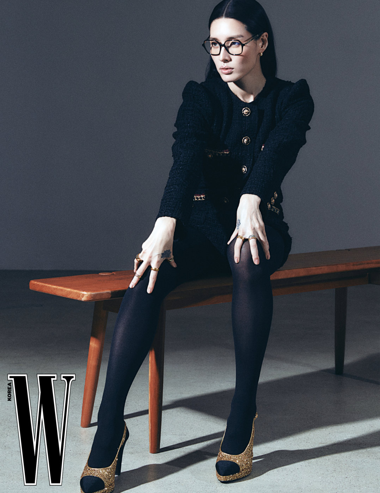

Shin Jung Woo (신정우; born Jun 22, 1986), better known by her professional name Monika (모니카), is a South Korean model, dancer, teacher, and the leader of the dance group PROWDMON. She is known as one of the best underground dancers and the teacher of all dancers. In 2021, she became a participant in the reality show Street Woman Fighter at the age of 35.